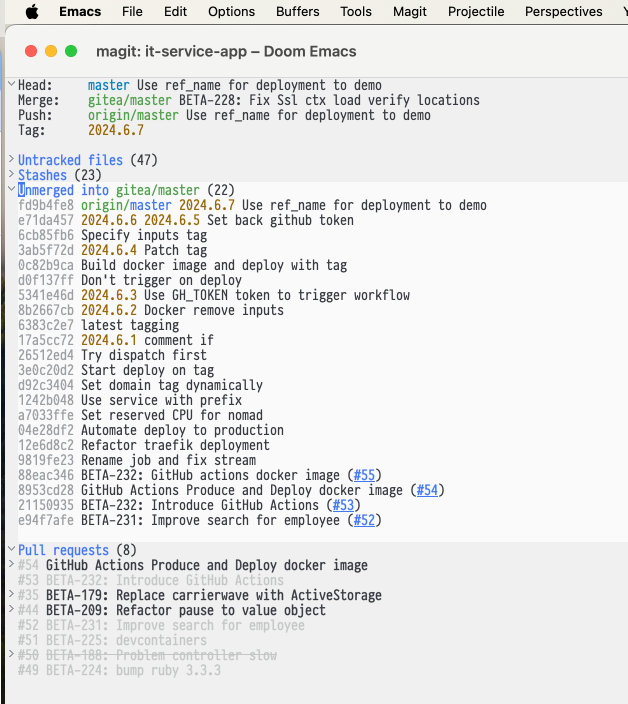

Rubu on Rails development changes a lot every year and sometimes it's not easy to keep up with the changes.
I've recently bought Sustainable Rails Book and it's hard to overestimate how valuable is it for me.
Here are couple of thoughts after reading first chapters.
Dare to add, invest heavily in CI/CD process, with modern GitHub offering it's just way easier then maintaining own on-prem solution.
At the moment I've shifted from own Drone.io and Jenkins to GitHub Actions and self-hosted runner for Continuous Integration and to Hashicorp Nomad for Continuous Deployment.
I'll try to carve up time to describe a bit more the process of deployment.
I've added the following gems:
And enjoy output of the audit.
My setup is quite complicated, Rails application requires:
bin/dev uses Procfile to bring up web server workers, search daemon and Resque UI.
bin/setup creates blank database and populates with seeds, so the app is ready to run after this step.
I've also tested devcontainers and they work quite good with VSCode.
Unfortunately for Emacs I found several downsides, namely
I also admit, VSCode brings some extra nifties not available or hard to implement in Emacs, like GitHub Actions integration.
It's hard to switch fully from Emacs to VSCode and I keep using both for different use cases.
I'm mostly using Emacs, but VSCode recently is on the table as well. Both have their strong sides.
Git in Emacs - Magit still bringe unbeatable git experience. org-mode is a thing, almost jupyther labs for the supported languages.

Though, VSCode integration with GitHub Actions and LSP with Rubocop and Ruby makes development more joyful.